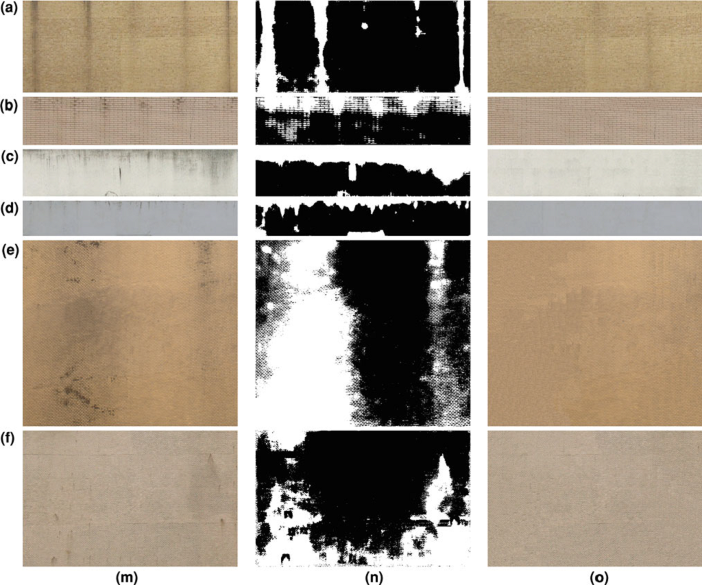
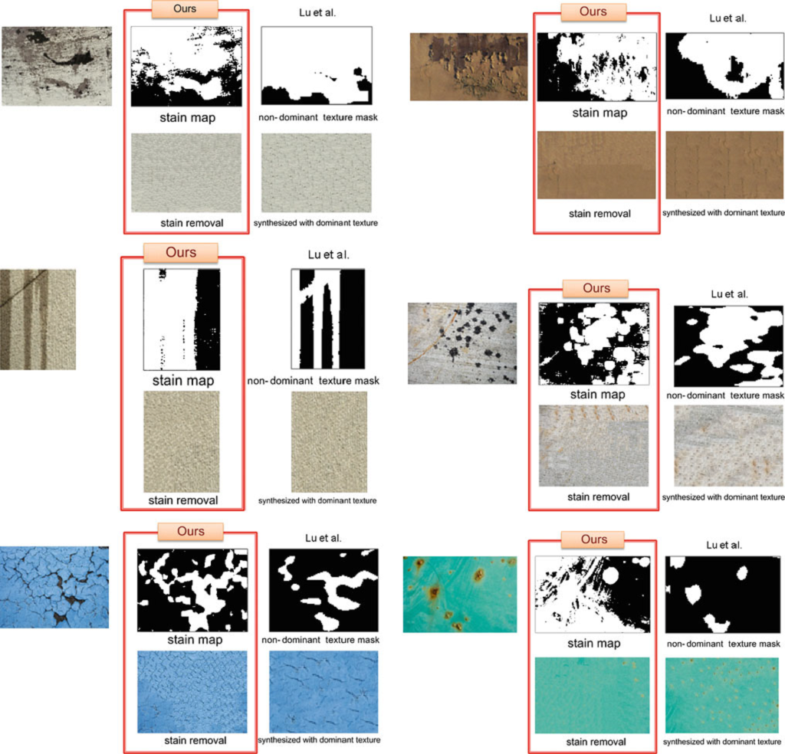
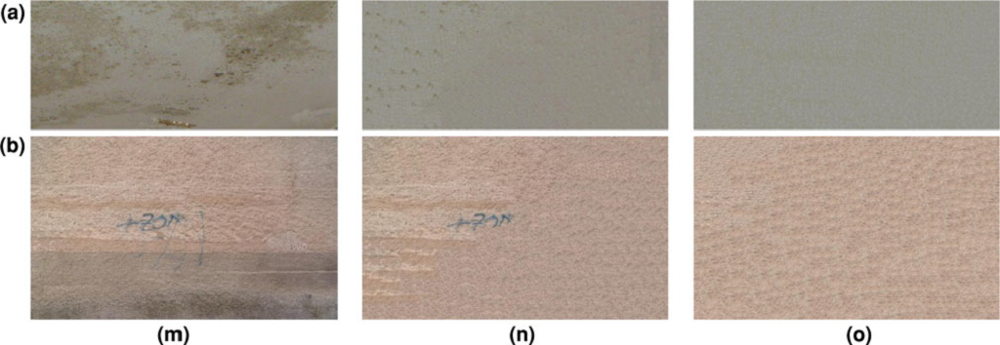
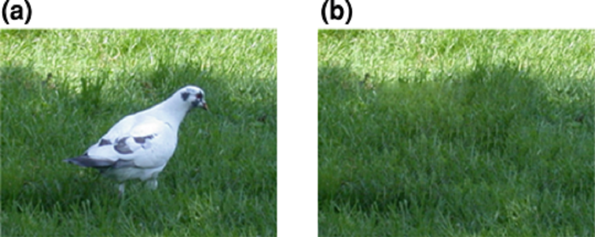

Stain Removal in 2D Images with Globally-Varying Textures
Chuan-Kai Yang Yu-Chih Yeh
Computer Graphics & Multimedia Lab., NTUST
| Abstract |
In this paper, we deal with the problem of removing stains in an image that may contain globally varying textures. In general, Image inpainting and texture synthesis are two possible techniques that may be used to address this issue; however, each has its limitation. In this work, we propose
an approach that helps to address this problem, especially when the target image portions to be repaired may consist of globally varying textures, that is, textures that are not stationary, but vary globally across images due to lighting
conditions or composing materials. We have developed methods to first detect regions with stains and then remove
the stains to obtain a newer look for the input image. Results are shown and compared with those of others if applicable to prove the effectiveness of proposed approaches. |
|

|
Figure 1: m The source image before the cleaning process. n The corresponding detected stain map. o The result after the cleaning process. Note
that different rows, from a–f, correspond to different input images |
|

|
Figure 2: The comparisons between our result and that of Lu et al. |
|

|
Figure 3: m The source image before the cleaning process. n The result after the first cleaning process. o The result after the second cleaning
process. Note that different rows, from a to b, correspond to different input images |
|

|
Figure 4: a The original image. b The resulting image after the bird
being removed |
{kind=link}
{kind=link}
{kind=link}
{kind=link}